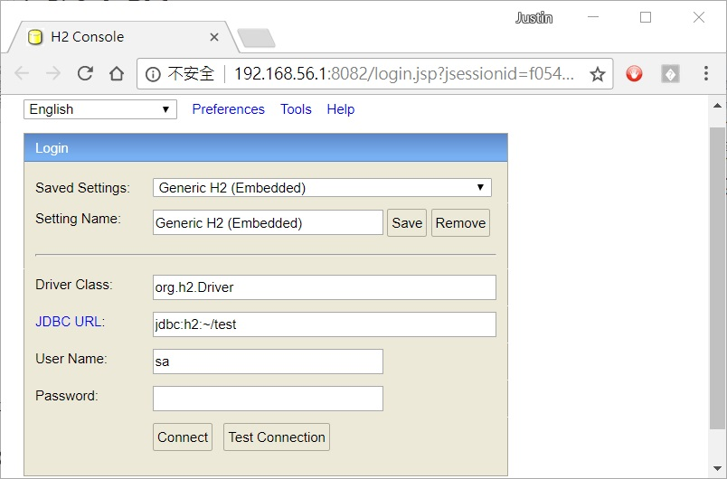
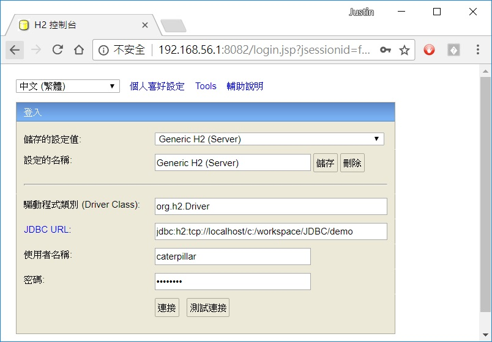
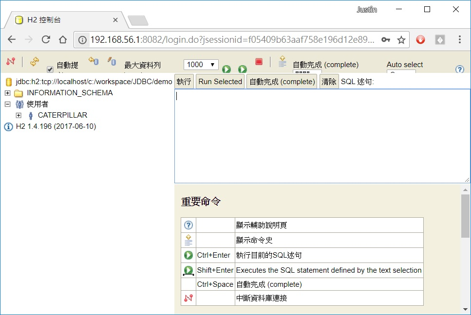

這邊的文件若要連線資料庫，使用的是 H2 資料庫，它是個純 Java 實現的資料庫，提供了伺服器、嵌入式或 InMemory 等模式，這類資料庫的好處是安裝、設定或啟動簡單。
可以在 H2 官方網站 下載 All Platforms 的版本，這會是個 zip 檔案，將其中的 h2 資料夾解壓縮至 C:\workspace，在文字模式中進入 h2 的 bin 資料夾，執行 h2 指令，就可以啟動 H2 Console：

H2 Console 是用來管理 H2 資料庫的簡單介面，左上角可以選擇中文介面，在轉換為中文介面之後，可以在「儲存的設定值：」選擇「Generic H2 (Server)」，而「JDBC URL：」設定為「jdbc:h2:tcp://localhost/c:/workspace/JDBC/demo」，這表示將在 c:\workspace\JDBC 中，建立資料庫儲存時使用之檔案 demo.mv.db（上圖看到~/test，表示在使用者資料夾中建立test.mv.db檔案），至於「使用者名稱：」與「密碼：」可以自行設定取，這會是登入資料庫時使用。

設定完成按下「連接」，就可以進入H2控制台，在其中進行SQL指令的執行與結果檢視等：

如果對 H2 的使用有進一步興趣，可以參考 H2 官方教學。
〈在 DI 之前〉以及之後相關的文件中，有使用到的 gossip.mv.db 資料庫檔案，其使用者名稱為 caterpillar，密碼為 12345678，建立表格時使用的 SQL 為：
CREATE TABLE t_account (
name VARCHAR(15) NOT NULL,
email VARCHAR(128) NOT NULL,
password VARCHAR(32) NOT NULL,
salt VARCHAR(256) NOT NULL,
PRIMARY KEY (name)
);
CREATE TABLE t_message (
name VARCHAR(15) NOT NULL,
time BIGINT NOT NULL,
blabla VARCHAR(512) NOT NULL,
FOREIGN KEY (name) REFERENCES t_account(name)
);